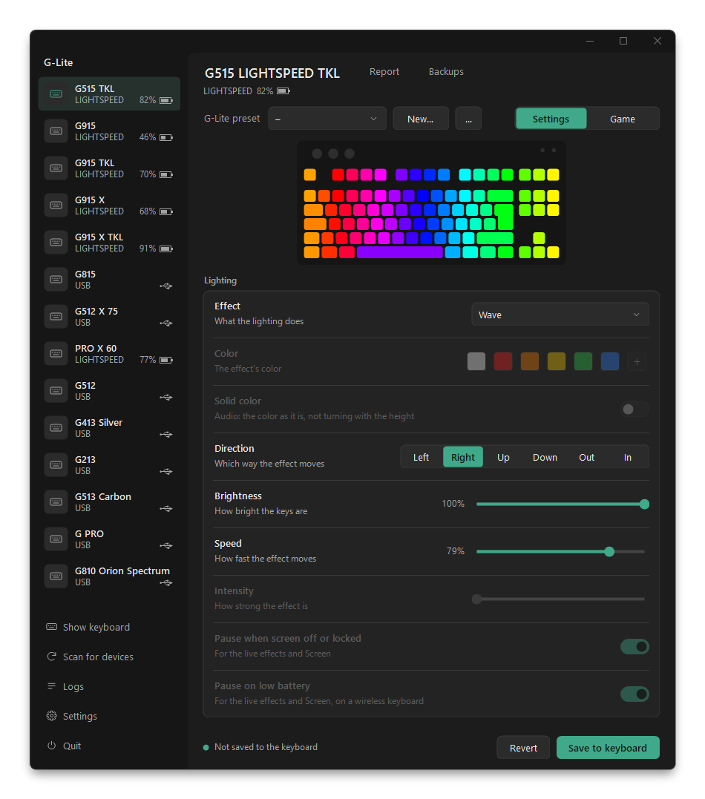
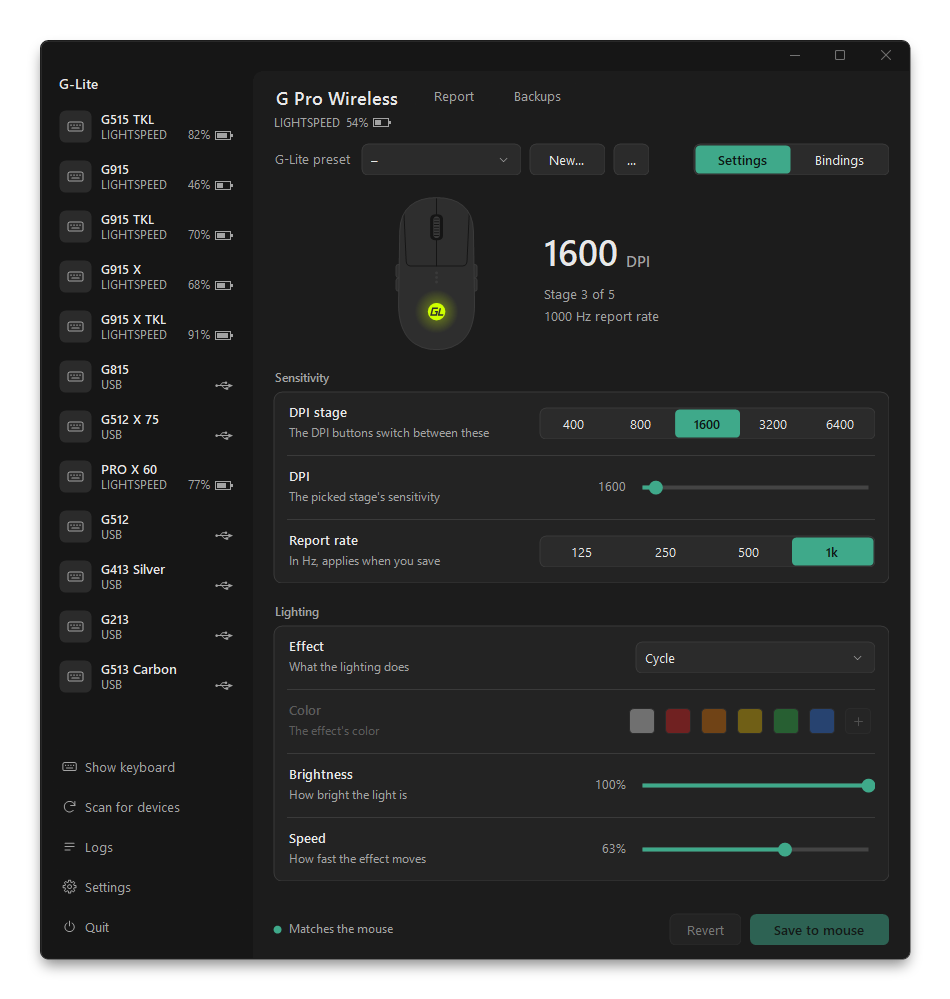
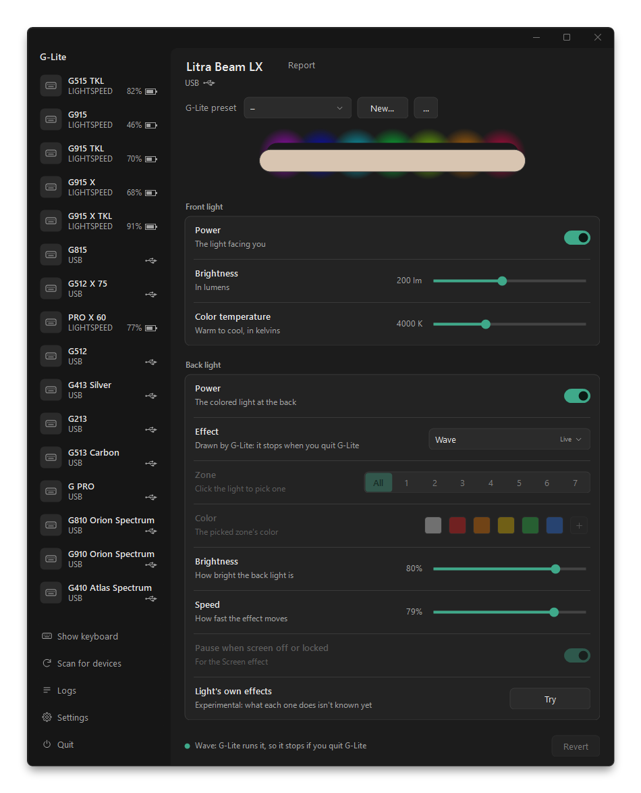
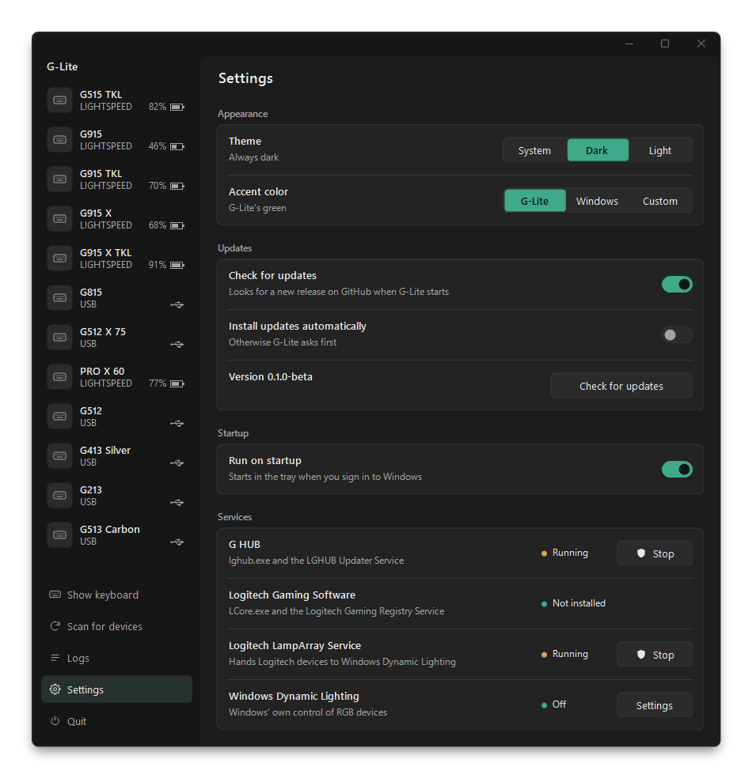

Lightweight control for Logitech G devices. No G HUB.
Lighting, DPI, report rate, buttons and sidetone for your Logitech G keyboard, mouse, headset or light. One file, nothing to install, next to no CPU when idle. It stops G HUB and Logitech Gaming Software for you, and starts them again.

Features
The settings you use, without the suite.
A lightweight alternative to Logitech G HUB and Logitech Gaming Software (LGS). G-Lite talks to your devices directly over Logitech's HID++ protocol. No service, no driver, no background updater.
Lighting
Effects, colours, speed, direction and brightness, shown live on a picture of your keys.
Saved on the device
Save to the keyboard or mouse, and your settings stay on it, with no app running, even on another PC, if the device supports it.
DPI, rate and buttons
DPI stages, report rate up to 8000 Hz, and what each mouse button does.
Presets on your PC
Name your setups per device. The one you picked is set again when G-Lite starts, in the tray too.
Live effects
Your keys, speakers or light follow the colours on your screen. Keys can also twinkle, echo your typing, follow your music, rain, burn or glow like an aurora.
Backups
A copy of the device is kept before every save. The factory profile is never written.
Every key, live.
Pick an effect and watch it on the key picture as it plays on the keyboard. Full-size, TKL, 75% and 60% layouts, ANSI and ISO.
- Static, Breathe, Cycle, Wave, Ripple and Screen
- Dim and turn off when idle
- Separate effects for the keys and the light bar
Mice, from the G5 to the PRO X SUPERLIGHT 2.
Set your DPI stages and report rate live, then save them into the mouse's onboard profile.
- Five DPI stages and the default one
- Logo and DPI lights
- Button bindings, invert scrolling

Headsets, speakers and lights.
Sidetone, auto-off and an experimental equalizer on the PRO X Wireless, the G560's four zones and its Screen effect, and both lights of the Litra Beam LX. Every battery shows in the tray.
- Litra brightness and colour temperature
- MX mice and keyboards: pointer speed, SmartShift, backlight, Easy-Switch

G HUB out of the way.
Settings shows whether G HUB, Logitech Gaming Software or Logitech's Dynamic Lighting service is running, and stops them in a click, so they don't undo your settings or start with Windows.
- Nothing is uninstalled: Start brings them back
- Windows' Dynamic Lighting settings, a click away
- Light or dark, and your accent colour

Devices
Does it work with mine?
Open G-Lite: if your device shows a screen of settings, it does. If it only shows its info, click Report and open an issue with it.
Keyboards
Lighting, brightness, the Screen and live effects, idle dimming, and saving to the keyboard. F1–F12 keys and Game mode keys, experimental.
Effects on the whole keyboard, a colour per area, a live picture. Set again at each start: the keyboard can't store lighting.
Lighting, brightness, the Screen and live effects, M1–M3, G1–G5 keys, the Game mode keys, and saving to the keyboard.
Static and Breathe at the level you pick (one colour), an Audio effect, a live picture, Game mode keys. Set again at each start.
Lighting, idle dimming, saving to the keyboard, backups, factory lighting, Game mode keys.
Lighting on the keys and the light bar, together or apart, the Screen and live effects, and Game mode keys (experimental). Not yet: saving to the keyboard, the knobs and actuation.
The keyboard's effects, a live picture, and live effects drawn key by key and Game mode keys, experimental.
Lighting, brightness, the Screen and live effects, idle dimming, and saving to the keyboard. G1–G5 keys and Game mode keys, experimental.
Lighting, brightness and the Screen effect.
Off, Static, Breathe and Cycle on all zones or each one, a live picture, an Audio effect, and live effects and Game mode keys where the keyboard has them, experimental.
Backlight colour, brightness and effects, on a picture of the keyboard. M1–M3 each with its own lighting; G key bindings, kept but not used yet.
Mice
DPI, status light, report rate, saving to the mouse, backups.
DPI, lighting, report rate, saving to the mouse, backups.
DPI, colour, report rate, saving to the mouse, backups.
DPI, lighting, report rate, buttons, invert scrolling, saving. No macros yet.
DPI, lighting, report rate, buttons, saving to the mouse.
DPI stages, report rate up to 8000 Hz, buttons, saving to the mouse, backups, factory profile.
DPI stages, report rate, buttons, saving to the mouse, backups.
DPI stages, report rate, buttons, saving to the mouse, backups, factory profile. No lighting yet.
DPI, DPI stages, report rate up to 8000 Hz, buttons. Saving where the profile is like the SUPERLIGHT 2's.
DPI levels, report rate, colour and buttons, saved to the mouse.
DPI levels, report rate, lighting and buttons, read only.
DPI stages, report rate, saving to the mouse.
DPI and report rate, set while G-Lite runs.
Headsets, speakers and lights
Sidetone, auto-off, battery, an equalizer (experimental).
Pointer speed, SmartShift, scrolling, backlight, Easy-Switch.
Front light brightness and warmth; the Beam LX's back light and its effects.
Lighting on all four zones or each one, the Screen effect, a picture of the speakers.
Get started
Two steps.
Quit G HUB or Logitech Gaming Software, and turn off Dynamic Lighting on Windows 11 (Settings, Personalization, Dynamic Lighting). They control the same devices and would undo G-Lite's changes. G-Lite's Settings can stop them for you, and start them again.
To check your copy is the one GitHub built, run Get-FileHash GLite.exe in PowerShell and compare it with checksums.txt on the release page.
FAQ
Questions
Can I use G-Lite and G HUB at the same time?
Not well. Both control the same devices, so each undoes the other's changes. Stop G HUB, or Logitech Gaming Software, while you use G-Lite: Settings, Services does it for you.
Do I need to uninstall G HUB or Logitech Gaming Software?
No. In G-Lite's Settings, Services lists them, with Logitech's Dynamic Lighting service, and shows which are running. Stop ends their apps, stops their Windows services and keeps them from starting with Windows; Windows asks for administrator rights once per click. Start puts everything back, and so can Task Manager (Startup apps) and Services, even without G-Lite. G HUB still opens if you start it yourself.
What if my device isn't supported yet?
Open G-Lite anyway: it lists every Logitech device it finds, with its connection, battery and firmware. Click Report on its screen, then Open GitHub issue, and the report is filled in for you. It holds what G-Lite needs to add the device, and nothing personal.
What happens to my settings if I stop using G-Lite?
Whatever you saved to a keyboard or mouse stays on it and works without any app. Settings that aren't saved to the device go back to the device's own when it restarts.
What if a save goes wrong?
G-Lite backs up the device before every save and reads back everything it writes. If a save stops halfway, it offers to restore the backup. Any backup, or the factory profile, can be restored from Backups.
Does G-Lite send any data?
No. It goes online only to check GitHub for a new version, which you can turn off in Settings. A device report leaves your PC only when you paste or submit it yourself.
Why does Windows warn me about it?
The exe isn't code-signed yet, so SmartScreen doesn't know it. The source and the build are public, and each release lists the file's checksum.
How do I remove it?
Quit it from the tray, turn off Run on startup in Settings, and delete GLite.exe with its settings.txt and log.txt. Backups are in %LOCALAPPDATA%\GLite\backups.